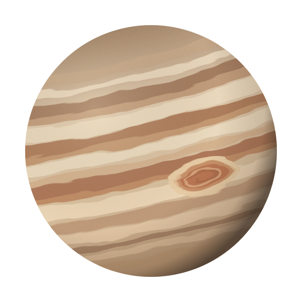

01 / THE GREAT RED SPOT멈추지 않는 소용돌이
저 빨간 점은, 거대한 폭풍이야.
목성의 트레이드마크인 대적점은 거대한 폭풍이야. 구름 위에 찍힌 작은 점처럼 보여도, 지구보다 넓은 규모라니. 조금 다르게 보이지?
#대적점 #폭풍의행성사적인 우주 취향 수집소 VOL. 01
오늘의 취향은, 목성
멀리서 보면 그저 커다란 별 하나.
가까이 들여다보면 끝없이 소용돌이치는 세계.
내가 이 행성을 좋아하는 이유를 들려줄게.
SOLAR SYSTEM
05 / JUPITER

태양계에서 가장 큰 행성 ↗JUPITER 목성, 우리의 다섯 번째 이웃
ARTIST’S IMPRESSION · 상상으로 그린 목성아주 큰 세계의
아주 짧은 소개 ↘
약 14만 km
지구 지름의 약 11배약 10 시간
덩치는 커도, 회전은 빠르게약 12 년
지구 시간으로 느긋한 한 해THINGS I LOVE ABOUT JUPITER
내가 목성에 빠진 세 가지 이유
목성의 트레이드마크인 대적점은 거대한 폭풍이야. 구름 위에 찍힌 작은 점처럼 보여도, 지구보다 넓은 규모라니. 조금 다르게 보이지?
#대적점 #폭풍의행성목성은 대부분 수소와 헬륨으로 이루어진 가스 행성이야. 우리가 보는 줄무늬는 단단한 땅이 아니라, 서로 다른 방향으로 흐르는 구름 띠야.
#가스행성 #구름감상화산으로 가득한 이오부터 얼음에 덮인 유로파까지. 목성의 위성들은 저마다 완전히 다른 표정을 하고 있어. 하나씩 알아가는 재미가 있지.
네 개의 위성 만나보기 ↗A LITTLE MOON WALK
1610년 갈릴레오가 관측한 네 개의 위성.
궁금한 달을 골라, 잠깐 산책해 봐.
01 / IO
태양계에서 화산 활동이 가장 활발한 천체야. 목성 등의 중력이 이오를 당기고 변형시키며 내부를 뜨겁게 해.
위성의 색과 크기는 이해를 돕기 위한 표현이야.ONE LAST QUESTION
여기까지 함께 왔다면, 이제 너도 목성에 조금 진심일지도.
마음에 드는 답을 눌러 봐.
아는 만큼, 밤하늘이 조금 더 재미있어져.
다시 목성으로 ↑